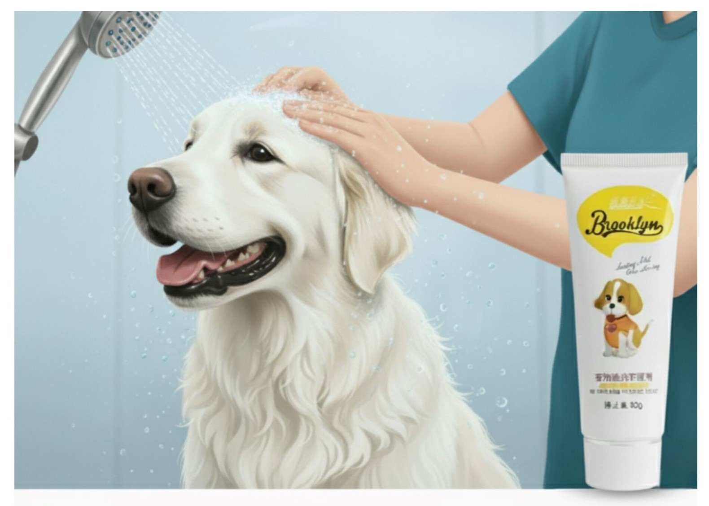
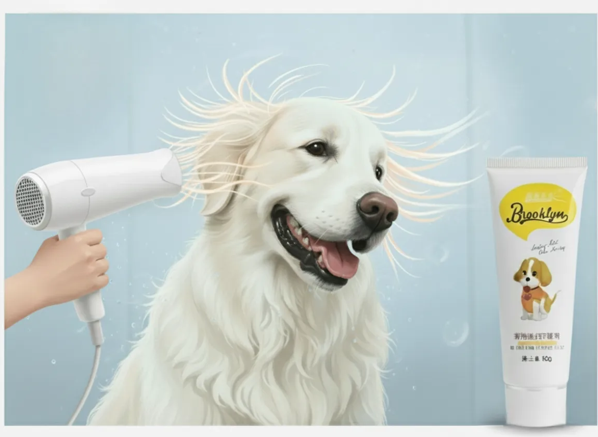

لوازم مورد نیاز:
- محصول Brooklyn Pet Dye (رنگ دلخواه شما)
- شامپوی مخصوص سگ (بدون نرم کننده)
- حوله
- سشوار (با حرارت کم یا متوسط)
- دستکش یکبار مصرف
- برس یا شانه مخصوص استفاده از رنگ
- مقداری تشویقی برای آرام نگه داشتن سگتان!
مرحله ۱: آمادهسازی و شستشوی اولیه
برای اینکه رنگ به بهترین شکل جذب شود، موهای سگ شما باید تمیز و عاری از هرگونه آلودگی یا چربی باشد.
حمام کنید: سگ خود را با شامپوی مخصوص سگها (بدون نرم کننده) بشویید.
آبکشی کامل: مطمئن شوید که تمام شامپو از روی موها شسته شده است.
مرحله ۲: خشک کردن موها
استفاده از حوله: ابتدا با حوله تمیز، آب اضافی موها را بگیرید.
سشوار کشیدن: برای خشک شدن کامل موها از سشوار با درجه حرارت کم یا متوسط استفاده کنید.
مرحله ۳: آماده شدن برای رنگ کردن

دستکش بپوشید و دستورالعملهای روی بسته رنگ را بخوانید و آماده کنید.
مرحله ۴: استفاده از رنگ و زمان جذب

پس از اعمال کامل رنگ، اجازه دهید رنگ حدود ۳۰ دقیقه روی موها بماند تا جلوهای درخشان و ماندگار ایجاد کنند. از آنجا که فرمول Brooklyn Pet Dye بر پایه ترکیبات طبیعی و گیاهی است، میتوانید بسته به شدت رنگ دلخواه، زمان ماندگاری را کمی کمتر یا بیشتر در نظر بگیرید. هرچه زمان بیشتر باشد، نتیجه نهایی غنیتر و عمیقتر خواهد بود. در این مدت، حیوان را در محیطی آرام نگه دارید تا فرآیند رنگآمیزی بدون استرس انجام شود.
مرحله ۵: آبکشی

سپس با آب ولرم آبکشی کنید تا آب شفاف شود.
مرحله ۶: خشک کردن نهایی

موها را با حوله یا سشوار خشک کنید و از ظاهر جدید سگتان لذت ببرید!